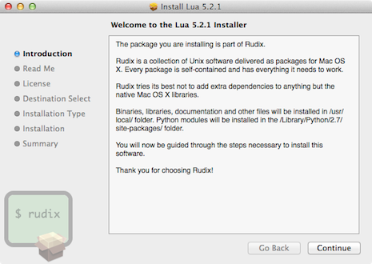
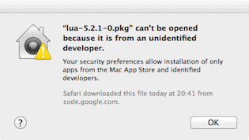

Lua is a lightweight programming language and has good reputation among game engines. In this article, you will learn how to install and use the latest version of Lua (5.2.x) on Mavericks, Mountain Lion, Lion or Snow Leopard.
Rudix provides Lua pre-compiled packages for Mavericks, Mountain Lion, Lion and Snow Leopard. The page you will going to access is rudix.org/packages/lua.html.
After you download, double click the package and follow the installation instructions.
Lua will be installed under /usr/local/ and the full path for the Lua interpreter will be /usr/local/bin/lua, but you don’t need to type the full path every time you want to call Lua, it’s OK just to type lua on the Terminal to get the interpreter.
Important files:
/usr/local/bin/lua /usr/local/include/lua.h /usr/local/lib/liblua.a /usr/local/share/doc/lua/readme.html /usr/local/share/man/man1/lua.1
On Mountain Lion and Mavericks things are a bit hard, you will probably get “lua-5.2.1-0.pkg” can’t be opened because it is from an unidentified developer. This means that the package was not registered with Apple – but you can choose to trust Rudix developers (I’m the author) and install anyway.
Here is how to bypass once your security settings:
Control key and click the package.Now follow the installation instructions.
Test if your installation is OK by printing “Hello World!”.
lua
Lua 5.2.1 Copyright (C) 1994-2012 Lua.org, PUC-Rio
> print ("Hello World!")
Hello World!
Type Control+D to exit.